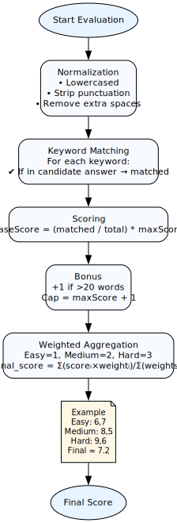

Candidate Experience
- Enter interviewer-provided code and upload resume (.txt / .docx).
- Resume parser extracts name, email, phone; manual edit if missing.
- Guided instructions and rules before starting.
- 6 timed questions: 2 Easy, 2 Medium, 2 Hard. Sequential flow.
- Instant feedback per question and final detailed scorecard.
Interviewer Tools
- Create and manage question sets manually or via CSV.
- Auto-generate Interview and Dashboard codes for sharing.
- Private dashboard access with code-based auth.
- Real-time monitoring of candidate progress and status.
- Detailed view: answers, matched keywords, per-question scores.
Tech & Security
- React + Redux Toolkit + Tailwind in frontend. Supabase backend.
- Automatic file validation and client-side limits.
- Hashed interview codes and secure data handling.
- Modular, scalable architecture for future features.
- Responsive by default; optimized for mobile and desktop.
- Real-time data synchronization
Rule-Based Systems
- Speed and efficiency. No external AI API calls. Near-instant responses for real-time interviews.
- Customization. Interviewers add topics and questions by writing rules. No retraining required.
- Reliability and control. Enforce exact logic such as auto-cancel on window minimize to protect integrity.
- Best for structured screening where predictability, low latency, and strict controls matter.
Candidate Flow

Interviewer Flow
Evaluation Logic
